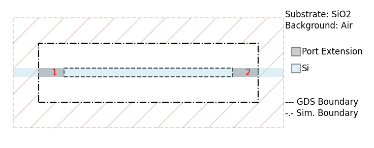
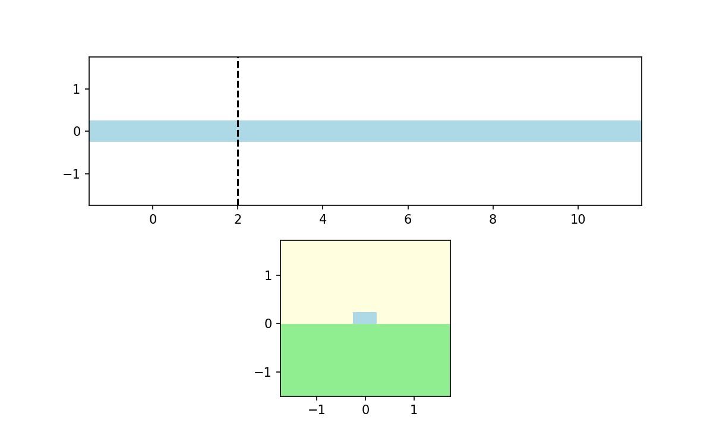
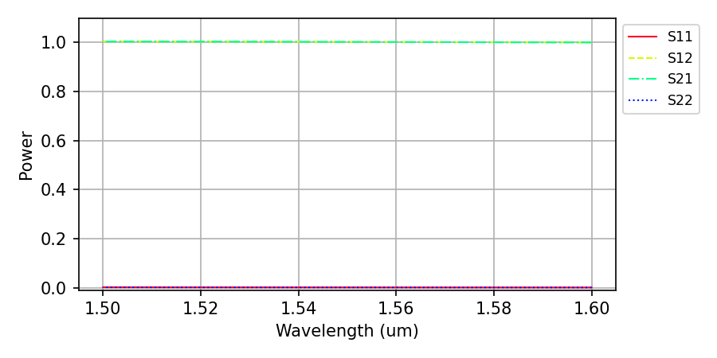
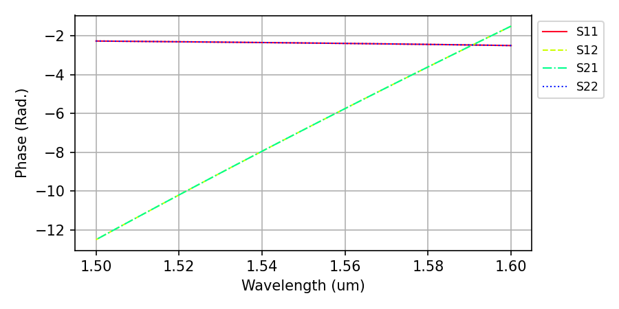

Finite Difference Time Domain Solver
The Finite-Difference Time-Domain (FDTD) solver is a powerful electromagnetic simulation tool for analyzing integrated photonic devices. This guide will walk you through setting up and running your first FDTD simulation using a straight waveguide example.
Basic Workflow
Every FDTD simulation follows these steps:
Define materials with their optical properties
Create layer stack describing the vertical structure
Set up device geometry from a GDS layout file or function
Configure ports for mode injection and monitoring
Add monitors to capture field data or S-parameters
Set simulation parameters including time, mesh, and boundaries
Run simulation and analyze results
Example: Straight Waveguide Simulation
This example demonstrates the essential steps to simulate a straight silicon waveguide and extract S-parameters.
Step 1: Import Required Modules
from pyOptiShared.DeviceGeometry import DeviceGeometry
from pyOptiShared.LayerInfo import LayerStack
from pyOptiShared.Material import ConstMaterial
from pyFDTDKernel.pyFDTDSolver import pyFDTDSolver
import gdstk
Step 2: Define Materials
Create materials with constant refractive indices:
##########################################
# Silicon dioxide (n=1.444) for substrate and cladding
sio2_mat = ConstMaterial(mat_name="SiO2", epsReal=1.444**2, color='lightgreen')
# Silicon (n=3.48) for waveguide core
si_mat = ConstMaterial(mat_name="Si", epsReal=3.48**2, color='lightblue')
# Air (n=1.0) for background
air_mat = ConstMaterial(mat_name="Air", epsReal=1**2, color='lightyellow')
### End Material Settings
Note: The dielectric constant (epsilon) is the square of the refractive index: ε = n2
Step 3: Build the Layer Stack
The layer stack defines your device’s vertical structure:
##########################################
layer_stack = LayerStack()
# Add silicon layer: 220nm thick starting at z=0
layer_stack.AddLayer(
name="L1",
number=1,
thickness=0.22,
zmin=0.0,
material=si_mat,
cladding=air_mat,
sideWallAng=0
)
# Set background (above structure) and substrate (below structure)
layer_stack.SetBGandSub(background=air_mat, substrate=sio2_mat)
### End Layer Stack
Step 4: Create Device Geometry
You can load geometry from a GDS file or define it programmatically. Here we’ll use gdstk to generate “waveguide.gds” file which will be used to define the geometry:
##########################################
#Create GDS mask for the device
length = 10
width = 0.5
layer_core = 1
output_filename = "waveguide.gds"
lib = gdstk.Library()
strt_wg = lib.new_cell("Straight")
vertices = [(0, -width/2), (length, -width/2), (length, width/2), (0, width/2)]
strt_wg.add(gdstk.Polygon(vertices, layer=layer_core))
lib.write_gds(output_filename)
device_geometry = DeviceGeometry()
device_geometry.SetFromGDS(
layer_stack=layer_stack,
gds_file='waveguide.gds',
buffers={'x': 1.5, 'y': 1.5, 'z': 1.5}
)
# Automatically detect ports along the x-direction
device_geometry.SetAutoPortSettings(
direction='x',
port_buffer=1.0
)
device_geometry.PlotGDS()
device_geometry.PlotGDSXSection(direction='y',pos=2)
### End Device Geometry
Port Detection: The solver automatically identifies waveguide ports at domain boundaries. It is also possible to define ports manually if auto port detection fails.
{kind=link}

{kind=link}

Step 5: Configure the FDTD Solver
Set up the solver with excitation and monitoring:
# Define wavelength range
lmin = 1.5 # Minimum wavelength (μm)
lmax = 1.6 # Maximum wavelength (μm)
lcen = (lmax + lmin) / 2 # Center wavelength
npts = 21 # Number of frequency points
fdtd_solver = pyFDTDSolver()
# Configure port excitation with Gaussian pulse
fdtd_solver.SetExcitation(
profile="gaussian-pw",
lcenter=lcen,
lmin=lmin,
lmax=lmax,
npts=npts,
mode_indices=0,
symmetries='1x1'
)
### End Configure the FDTD Solver
Key Parameters:
profile: Type of excitation (gaussian-pw for broadband analysis)
mode_indices: Which mode to excite (0 = fundamental mode)
symmetries: Exploit device symmetry to reduce simulation time
Step 6: Add Monitors
Add a DFT (Discrete Fourier Transform) monitor to capture frequency-domain fields:
# Add DFT monitor to capture frequency-domain fields
fdtd_solver.AddDFTMonitor(
mon_type="2d-z-normal",
z0=0.11,
name="MyDFTMonitor1",
lmin=lmin,
lmax=lmax,
npts=npts,
save_ex=True,
save_ey=True,
save_hz=True
)
### End Add Monitors
Monitor Types:
2d-z-normal: XY plane (for waveguides propagating in X or Y)
2d-x-normal: YZ plane
2d-y-normal: XZ plane
Step 7: Set Simulation Parameters
Configure mesh resolution, simulation time, and output:
# Configure simulation parameters
fdtd_solver.SetSimSettings(
sim_time=350,
space_step=0.05,
subpixel_level=2,
results_path="./results",
device_name='waveguide',
device_geometry=device_geometry,
auto_shutoff_limit=1e-2,
export_mat_grid=True
)
### End Set Simulation Parameters
Critical Parameters:
space_step: Mesh resolution (smaller = more accurate but slower)
subpixel_level: Material averaging (1=off, 2=recommended)
sim_time: Duration in time units (depends on device size)
auto_shutoff_limit: Stops simulation when field energy falls below threshold
Step 8: Run Simulation
##########################################
# Run the simulation
results = fdtd_solver.Run()
# Plot S-parameters
results.PlotSParameters(snp='ALL', plot_type='power')
results.PlotSParameters(snp='ALL', plot_type='phase')
### End Run and Post Processing
# Run the simulation
results = fdtd_solver.Run()
# Plot S-parameters
results.PlotSParameters(snp='ALL', plot_type='power')
results.PlotSParameters(snp='ALL', plot_type='phase')
{kind=link}

{kind=link}

Complete Example Code
Here is the complete code you can copy and run (FDTD_getting_started.py):
from pyOptiShared.DeviceGeometry import DeviceGeometry
from pyOptiShared.LayerInfo import LayerStack
from pyOptiShared.Material import ConstMaterial
from pyFDTDKernel.pyFDTDSolver import pyFDTDSolver
import gdstk
##########################################
### Material Settings ###
##########################################
# Silicon dioxide (n=1.444) for substrate and cladding
sio2_mat = ConstMaterial(mat_name="SiO2", epsReal=1.444**2, color='lightgreen')
# Silicon (n=3.48) for waveguide core
si_mat = ConstMaterial(mat_name="Si", epsReal=3.48**2, color='lightblue')
# Air (n=1.0) for background
air_mat = ConstMaterial(mat_name="Air", epsReal=1**2, color='lightyellow')
### End Material Settings
##########################################
### Layer Stack Settings ###
##########################################
layer_stack = LayerStack()
# Add silicon layer: 220nm thick starting at z=0
layer_stack.AddLayer(
name="L1",
number=1,
thickness=0.22,
zmin=0.0,
material=si_mat,
cladding=air_mat,
sideWallAng=0
)
# Set background (above structure) and substrate (below structure)
layer_stack.SetBGandSub(background=air_mat, substrate=sio2_mat)
### End Layer Stack
##########################################
### Device Geometry/Port Settings ###
##########################################
#Create GDS mask for the device
length = 10
width = 0.5
layer_core = 1
output_filename = "waveguide.gds"
lib = gdstk.Library()
strt_wg = lib.new_cell("Straight")
vertices = [(0, -width/2), (length, -width/2), (length, width/2), (0, width/2)]
strt_wg.add(gdstk.Polygon(vertices, layer=layer_core))
lib.write_gds(output_filename)
device_geometry = DeviceGeometry()
device_geometry.SetFromGDS(
layer_stack=layer_stack,
gds_file='waveguide.gds',
buffers={'x': 1.5, 'y': 1.5, 'z': 1.5}
)
# Automatically detect ports along the x-direction
device_geometry.SetAutoPortSettings(
direction='x',
port_buffer=1.0
)
device_geometry.PlotGDS()
device_geometry.PlotGDSXSection(direction='y',pos=2)
### End Device Geometry
##########################################
### FDTD Settings ###
##########################################
### Configure the FDTD Solver
# Define wavelength range
lmin = 1.5 # Minimum wavelength (μm)
lmax = 1.6 # Maximum wavelength (μm)
lcen = (lmax + lmin) / 2 # Center wavelength
npts = 21 # Number of frequency points
fdtd_solver = pyFDTDSolver()
# Configure port excitation with Gaussian pulse
fdtd_solver.SetExcitation(
profile="gaussian-pw",
lcenter=lcen,
lmin=lmin,
lmax=lmax,
npts=npts,
mode_indices=0,
symmetries='1x1'
)
### End Configure the FDTD Solver
### Add Monitors
# Add DFT monitor to capture frequency-domain fields
fdtd_solver.AddDFTMonitor(
mon_type="2d-z-normal",
z0=0.11,
name="MyDFTMonitor1",
lmin=lmin,
lmax=lmax,
npts=npts,
save_ex=True,
save_ey=True,
save_hz=True
)
### End Add Monitors
### Set Simulation Parameters
# Configure simulation parameters
fdtd_solver.SetSimSettings(
sim_time=350,
space_step=0.05,
subpixel_level=2,
results_path="./results",
device_name='waveguide',
device_geometry=device_geometry,
auto_shutoff_limit=1e-2,
export_mat_grid=True
)
### End Set Simulation Parameters
### End FDTD Settings
##########################################
### Run and Post Processing ###
##########################################
# Run the simulation
results = fdtd_solver.Run()
# Plot S-parameters
results.PlotSParameters(snp='ALL', plot_type='power')
results.PlotSParameters(snp='ALL', plot_type='phase')
### End Run and Post Processing
Understanding the Results
The FDTD solver returns an FDTDResults object with several useful components:
S-Parameters
S-parameters quantify how much power is transmitted and reflected:
S11: Reflection at Port 1 (how much power bounces back)
S21: Transmission from Port 1 to Port 2 (how much power passes through)
Power transmission: |S21|2
Power reflection: |S11|2
Field Data
DFT monitors store frequency-domain field components:
Access fields:
results.runs[0].dftmonitors["MyDFTMonitor1"].Get('Hz')Plot field profiles to visualize mode propagation
Results Storage
All data is saved in HDF5 format (results/waveguide.hdf5):
from pyFDTDKernel.FDTDResults import FDTDResults
# Load results from file
results = FDTDResults()
results.loadHDF5('results/waveguide.hdf5')
Tips for Success
Mesh Resolution: Start with 50nm (0.05 μm) and refine if needed. Smaller mesh = more accuracy but longer runtime.
Subpixel Averaging: Always use
subpixel_level=2for curved or diagonal features. This dramatically improves accuracy without increasing mesh density.Simulation Time: Ensure fields have time to propagate through the device and decay. Monitor the auto-shutoff to verify convergence.
Boundary Padding: Use at least 1 μm buffers around devices to prevent reflections from PML boundaries.
Mode Selection:
mode_indices=0excites the fundamental mode. For multimode devices, use higher indices (1, 2, etc.).Wavelength Range: Choose range based on your application. More frequency points give smoother spectra but take longer.
Advanced Features
Port Symmetries
For symmetric devices (crossings, splitters), exploit symmetry to simulate only one port:
fdtd_solver.SetExcitation(
...,
symmetries='4x' # Predefined 4-port crossing symmetry
)
Time Monitors
Capture time-domain field evolution for animations:
fdtd_solver.AddTimeMonitor(
mon_type="2d-z-normal",
z0=0.11,
name="MyTimeMonitor1",
npts=200 # Number of time snapshots
)
High Order Modes
Excite specific modes in different ports:
fdtd_solver.SetExcitation(
...,
mode_indices=[0, 2] # Port 1: mode 0, Port 2: mode 2
)
Next Steps
Now that you understand the basics, you can:
Simulate bends, splitters, and other photonic components
Analyze wavelength-dependent transmission and reflection
Export field profiles for visualization
Optimize device geometries for target performance
For advanced examples including 90-degree bends, polarization converters, and waveguide crossings, consult the full documentation FDTD.